PROJECT_NAME: three design directions
Real data: 20 OpenAlex/Crossref papers (plus a worst-case toggle at proto/?wc=1). Pick one, or mix two.
Folio editorial / journal page, light-first
The feed is a journal's table of contents: papers grouped under day headings, the journal as an italic running head, a serif title, a two-line abstract preview, and topics set as coloured words with their shape. No cards and no boxes, only rules between entries. The paper sheet reads like an article page.
- Type Source Serif 4 (titles, abstract in the sheet) · Instrument Sans (UI) · IBM Plex Mono (DOIs only)
- Palette Neutral paper #fafaf9 / ink #1c1b19; dark #161514 / #ecebe7. One accent, a tide-table blue (#1f4f8f, dark #a3c0ea), used only for links, "New" and the new-since chip.
- Best at reading and deciding. The abstract preview means fewer sheet opens, and it's the calmest of the three and the most 'research'.
- Weak at density. About 2 papers per phone screen. The day headings add height, and colour-only topic words are the subtlest topic signal of the three.
Open the live prototype → (keys 1–3 switch direction, T toggles theme)
Screenshots removed before the public release (D023); see the history backup.
Gauge scientific instrument, precise and data-dense
A readout. Each paper is a row with a monospace code column (journal abbreviation + ISO date), a serif title, and a 13-slot topic register: every topic has a fixed slot and shape, so you can scan which areas a paper touches without reading. A mono readout line (OA · cited · refs · authors · no abstract) follows. Every selection is one 1px signal line, the instrument's only colour.
- Type IBM Plex Serif (titles) · IBM Plex Sans (UI) · IBM Plex Mono (codes, dates, figures, DOIs). One superfamily, three jobs.
- Palette Cool grey #f4f5f6 + white panels / #0e0f10 + #16181a. Signal amber (#9a5600, dark #f0a640) only on the 1px selection lines and the 'new' marks.
- Best at scanning many papers fast. About 3 per phone screen and 2 columns on desktop. Engineers and data-minded users will love the register and readout.
- Weak at warmth and first-time legibility. The register needs learning, and mono-heavy rows can feel technical to students. Three faces is right at the limit.
Open the live prototype → (keys 1–3 switch direction, T toggles theme)
Screenshots removed before the public release (D023); see the history backup.
Ledger taste-skill's pick: achromatic ledger
Ink-only chrome on a fog-grey ground, white paper cards, and exactly one data hue reserved for what's new: the dot on new cards, the count in the new chip, and a line across the feed saying where you left off. Journals carry a small publisher monogram (Co, AG, El…). On desktop a right rail summarises the feed by topic.
- Type Newsreader (titles) · Geist (UI) · Geist Mono (DOIs only)
- Palette Fog #f2f4f7 + white cards / #0b0c0e + #15171a. Ink chrome; one data hue #1d5fbf (dark #7aa7f0) only on new-since-last-visit. Topics as pale tint chips with shape glyphs (the most colour of the three, all AA).
- Best at the daily return visit. The 'you left off here' line answers 'what's new since I last looked?' at a glance, and the tinted topic chips scan fastest.
- Weak at distinctiveness. Cards on a grey ground are the most familiar pattern of the three, so its identity rests on the left-off line, the monograms and the serif.
Open the live prototype → (keys 1–3 switch direction, T toggles theme)
Explore feed: sticky filters + new-since chip

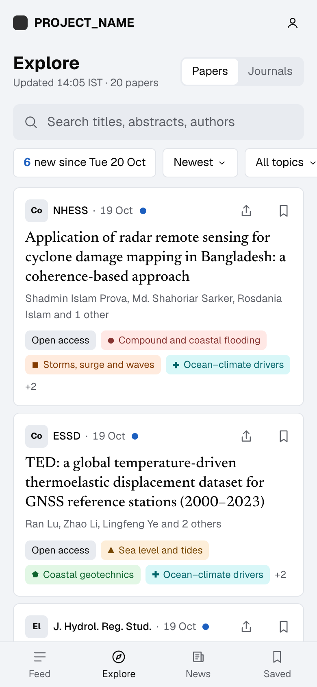

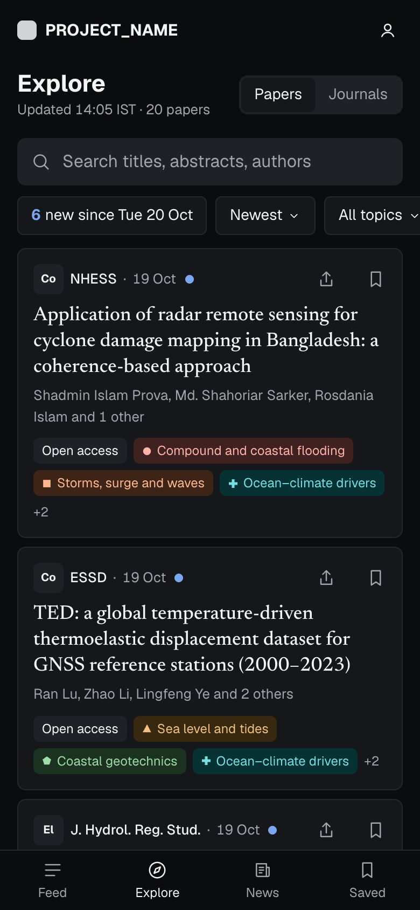

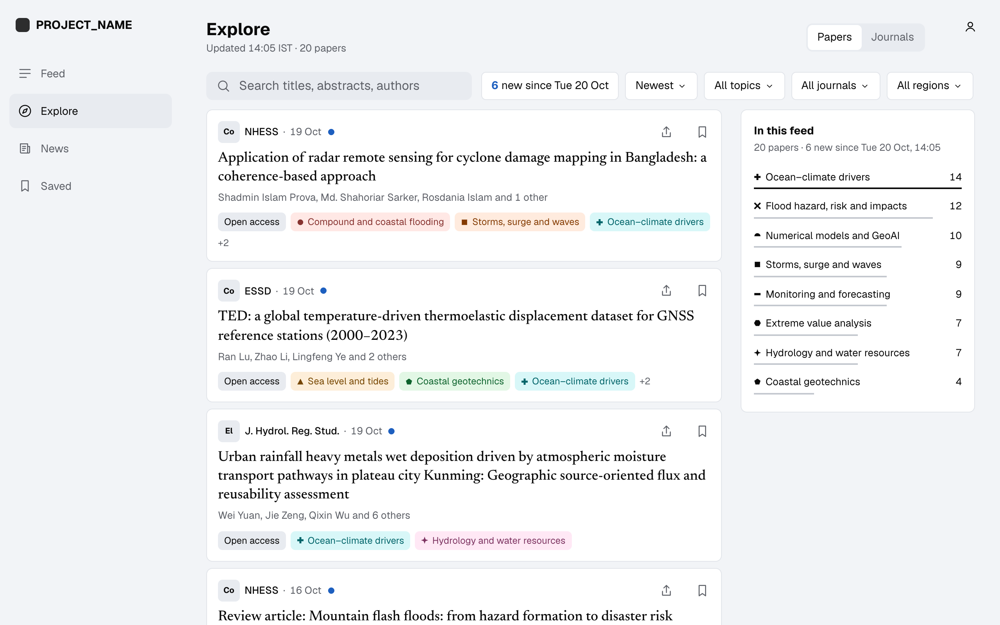

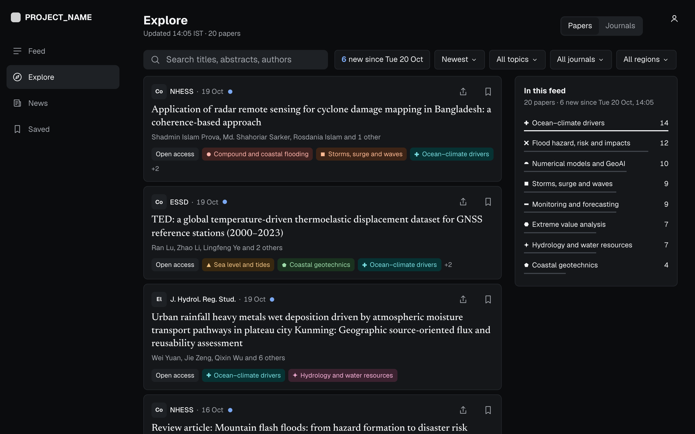
Paper sheet (56-author paper)

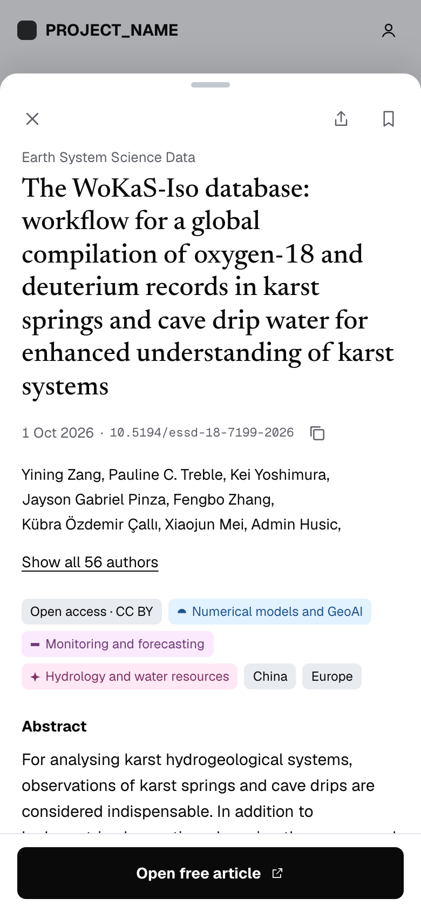

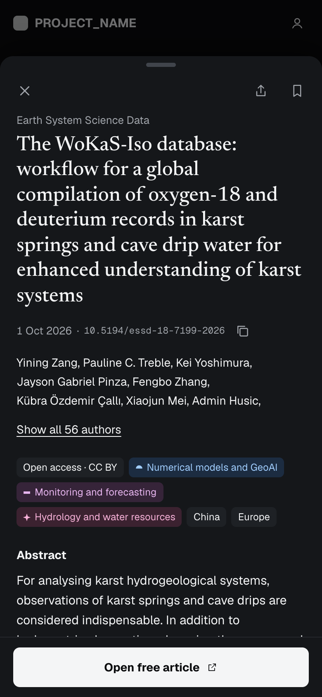

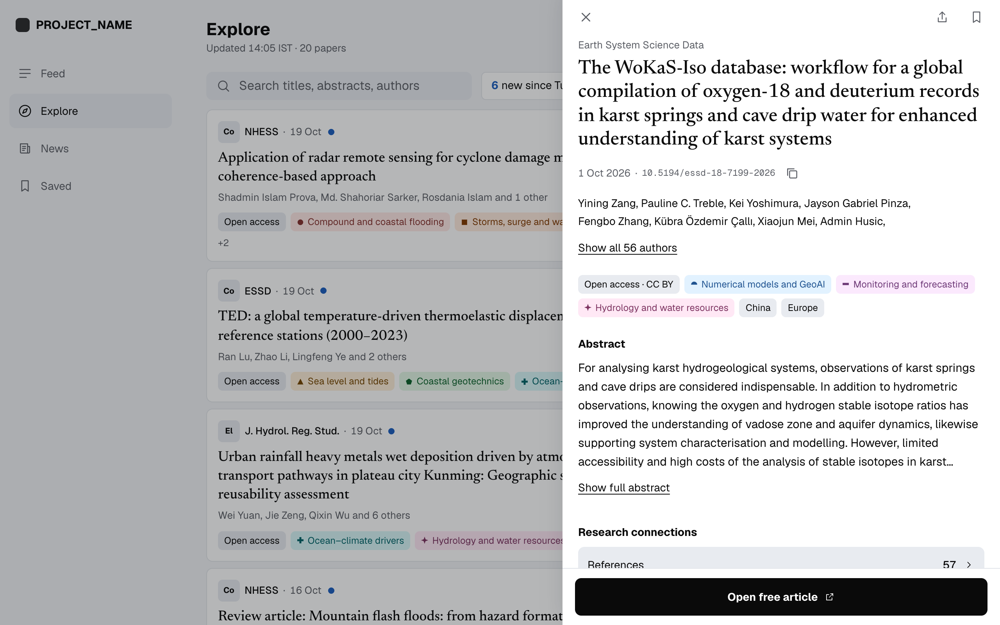

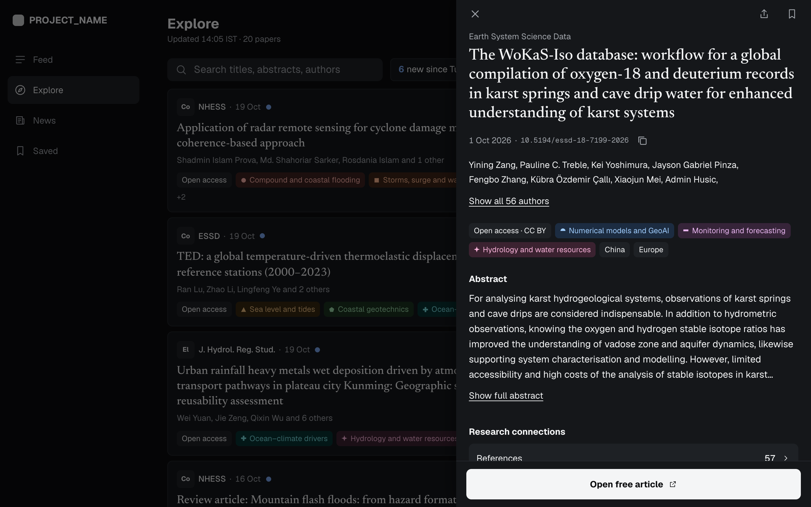
Region sheet with South Asia sub-regions

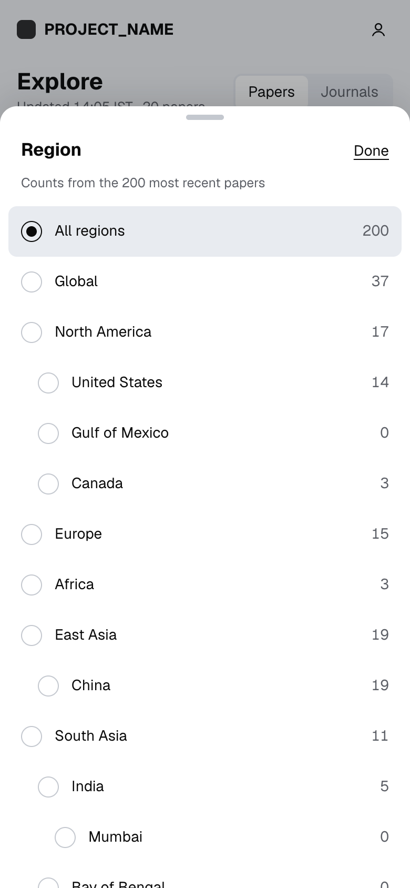

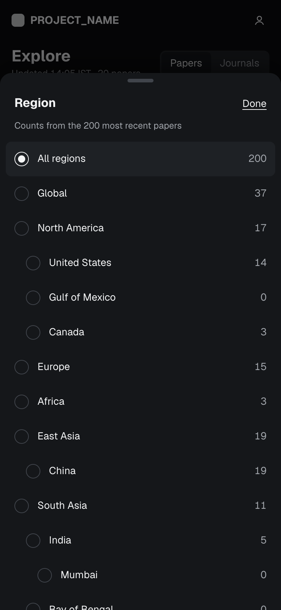

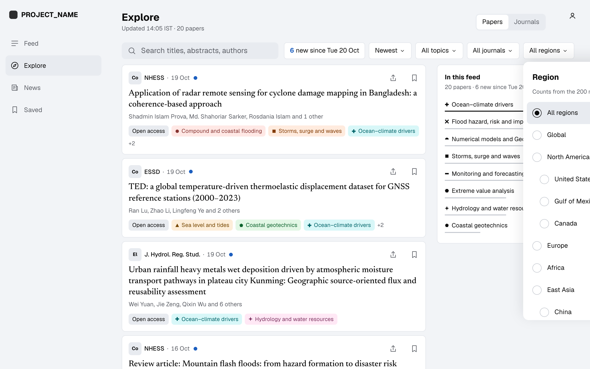

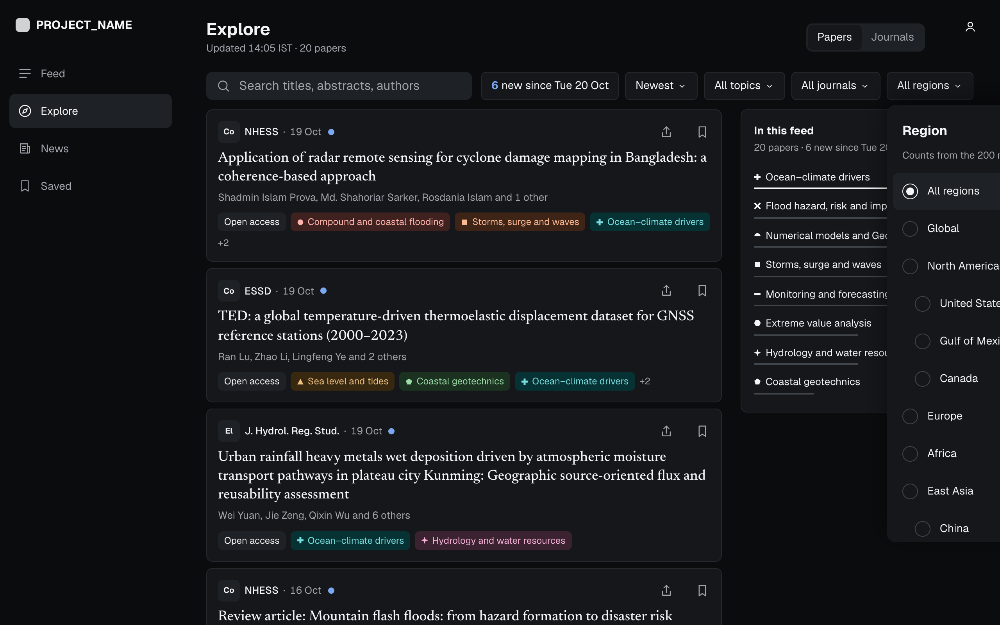